Multilingual Drupal 8
Drupal OpenDays Dublin 2014
By: Luis Rodriguez
Apologise for my english
Why Multilingual
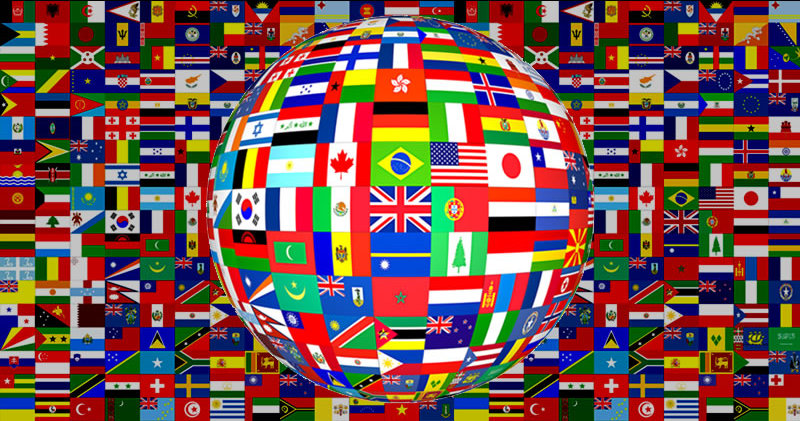Two official languages
Public sector work
Europe
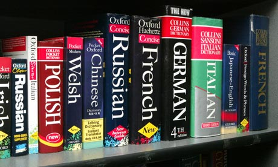Inprove your website / business
In this presentation:
Install Drupal 8 in another languageCore modules (out-of-the-box)Full translation exampleDrupal 7 differences
Drupal 7
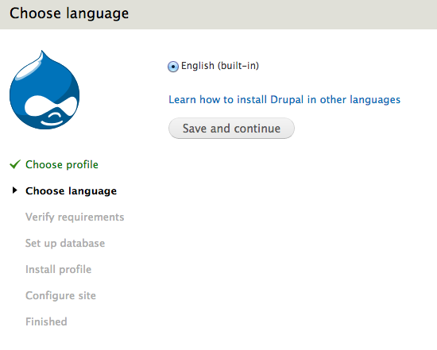Drupal 7
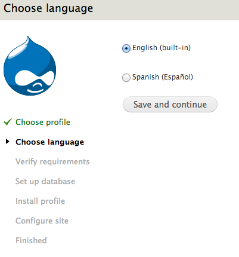Drupal 8 - Select language
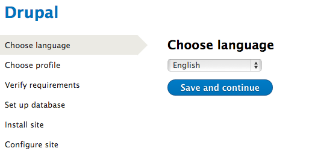Drupal 8 - Select language
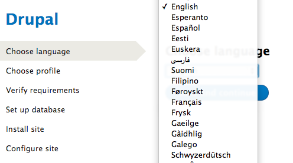Drupal 8 - Installed
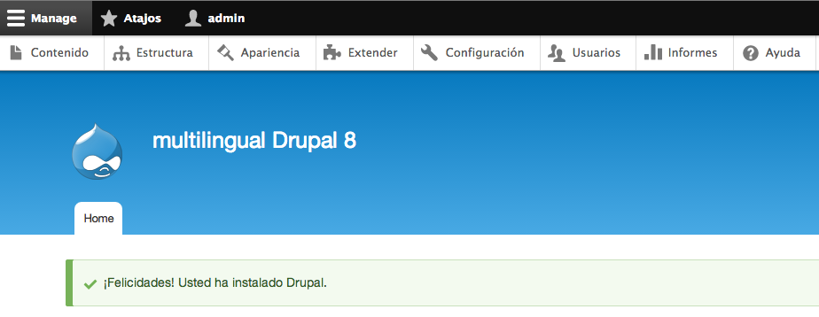Drupal 8 - Add language
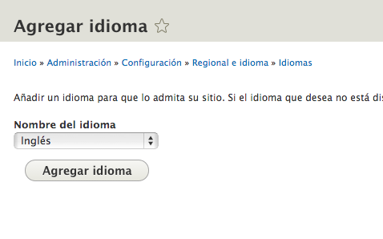Drupal 8 - New language
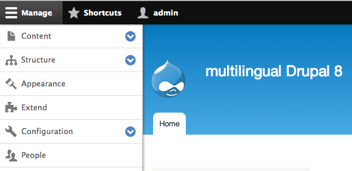Please help to translate Drupal
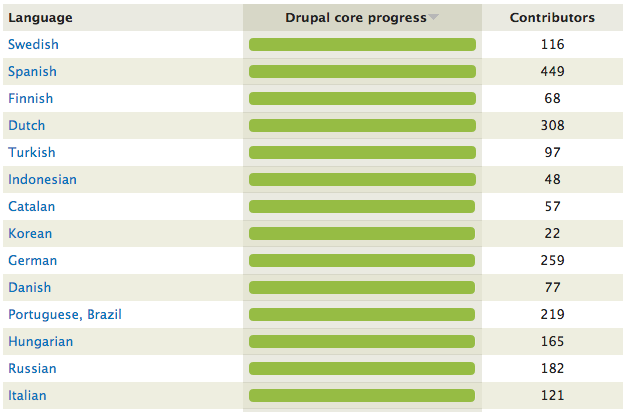https://localize.drupal.org
List of modules
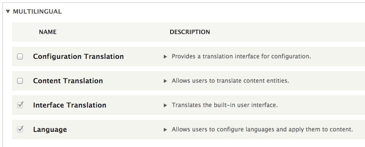Content Translation
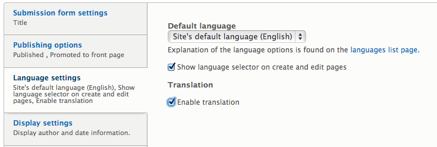Content Translation
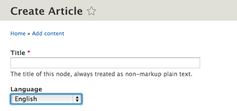Content Translation
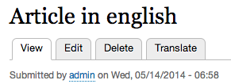Content Translation
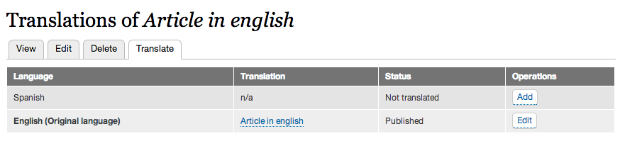Language Negotiation
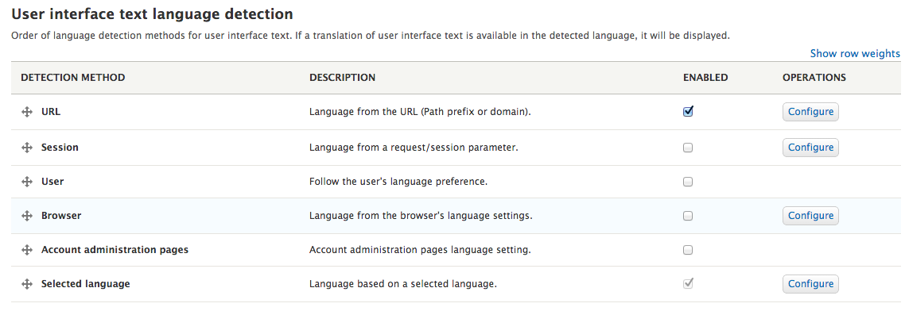Language Negotiation
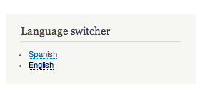View Restriction
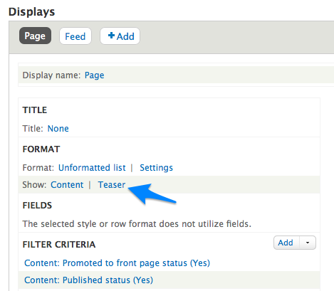View Restriction
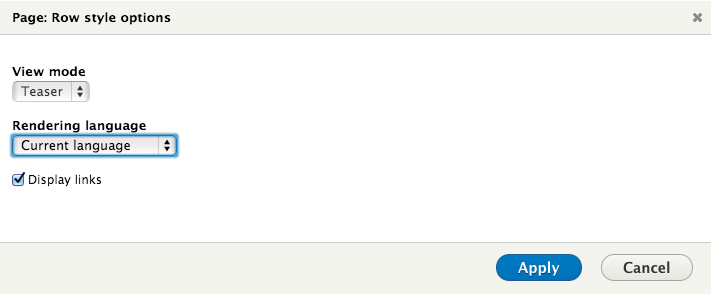Result - English selected
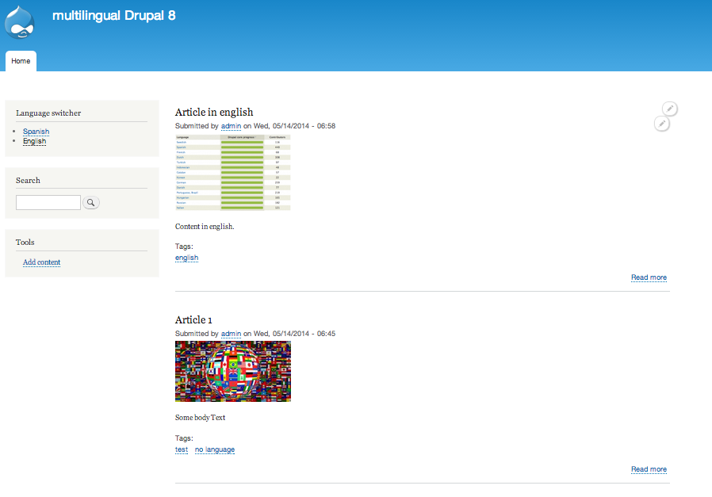Result - Spanish selected
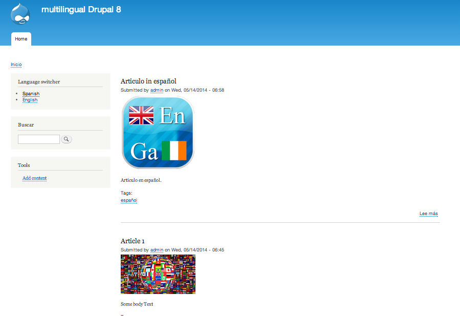No Language
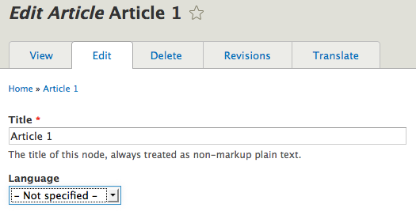Summary
Translate admin interface.

Summary
Translate admin interface.
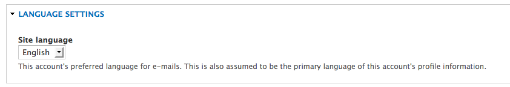Summary
Create content in one language.
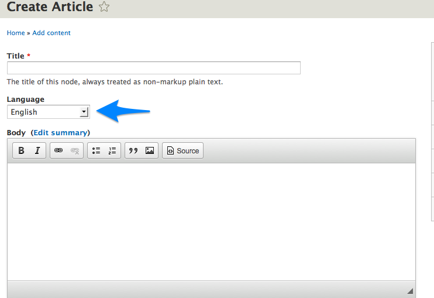Summary
Translate actual content.
Summary
Change view filter
Summary
Menu Translation
This feature is not ready jet.
Summary
Taxonomy Translation
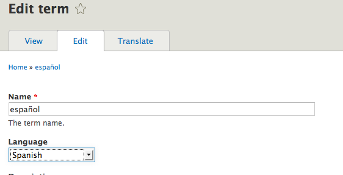Summary
Translate String / Views
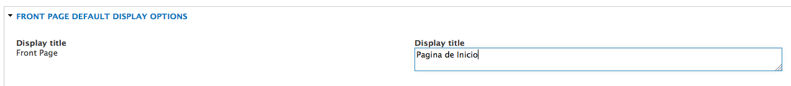Summary
Language negociation
Drupal 7
Internationalization
https://drupal.org/project/i18n
Internationalization views
https://drupal.org/project/i18nviews
Entity translation
https://drupal.org/project/entity_translation
String Overrides
https://drupal.org/project/stringoverrides
Translation Overview
https://drupal.org/project/translation_overview
Title
https://drupal.org/project/title
Drupal 7
This is a screenshot from almost any multilingual site.
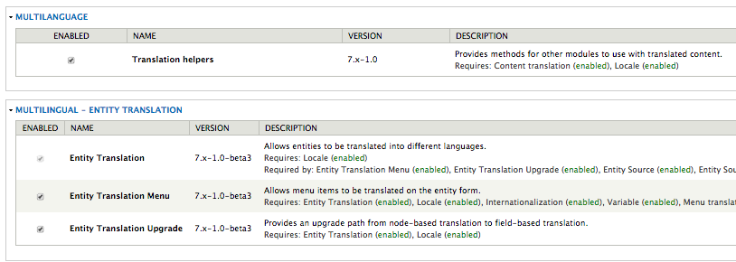